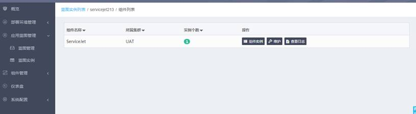
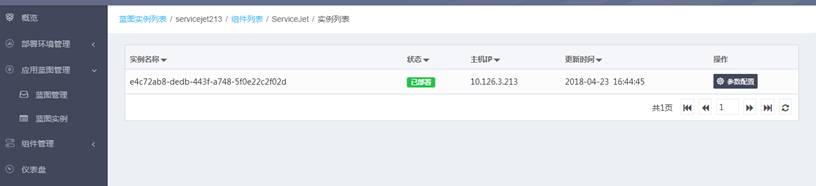
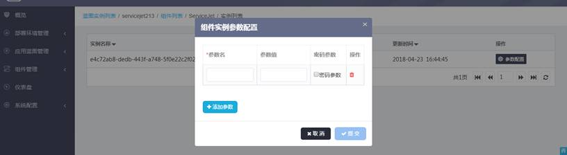
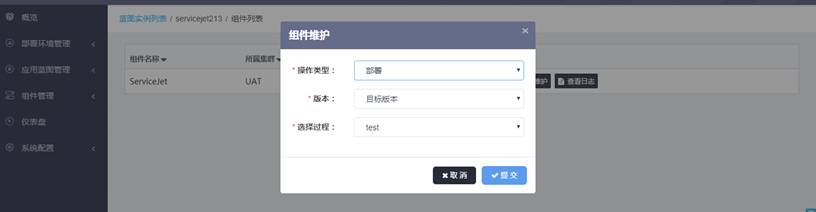

点击蓝图实例列表页的操作按钮，选择组件，可以进入该蓝图实例的组件列表页面，可以查看组件的所属集群、实例个数

组件列表页面中点击 “组件实例”按钮可查看组件的各个实例详情，包括实例名称、状态、主机IP、更新时间等信息。

组件实例列表页面点击“参数配置”按钮可以单独配置组件实例的配置

组件列表页中点击“维护”按钮，可以单独执行组件的流程

组件列表页中点击“查看日志”按钮，可以查看维护操作的日志